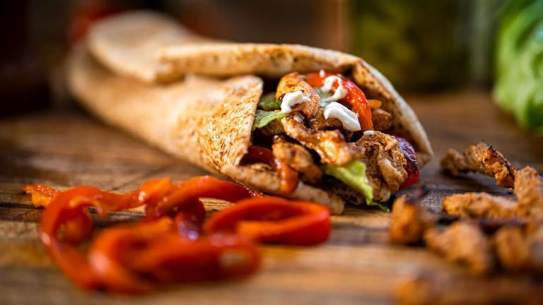

Shawarma is a popular Middle Eastern dish that consists of grilled meat, vegetables, and spices wrapped in a warm bread. The bread is a crucial component of the dish and can make or break the overall taste and texture. In this write up, we will be discussing how to make the best shawarma bread.
Ingredients
- Three cups of bread flour or all purpose flour
- Two teaspoons of instant yeast
- One tablespoon of melted butter
- One teaspoon of salt
- One teaspoon of sugar
- Half cup of warm whole milk
- One cup of warm water
- One teaspoon of olive oil for lubricating the pan
Procedure
- In a large bowl, add 1 cup of flour, instant yeast, salt, sugar, butter, milk and water. With the aid of a mixer or with your hands, mis thoroughly to combine well.
- Add your remaining flour in bits till a soft dough is formed.
- On a lightly floured work surface, knead your dough for about 5-8 minutes. Then, add your teaspoon of olive oil in the bowl to oil it, return the kneaded dough to the bowl and cover with a kitchen towel or wrap to rise or doubles in size for about 2 hours.
- After doubling in size, punch down to deflate. Divide the dough into 8 pieces and cover so it dosen't dry out. Allow to rest for about 15 minutes.
- Place a non stick pan on a medium heat then with the aid of a rolling pin, roll out a piece of the dough to the thickness preferable.
- Place the flatbread on the non stick pan, allow to bubble, flip to the other side and cook till both sides are golden brown. Repeat the process till all the dough is exhausted.
Return to top
Return to main page